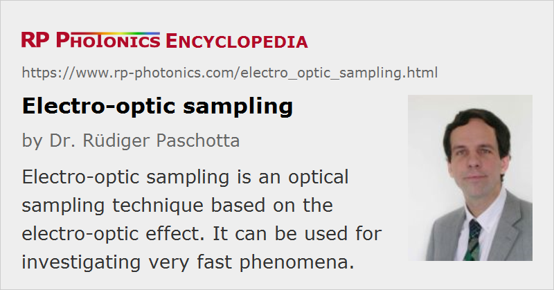

Electro-optic Sampling
Definition: an optical sampling technique based on the electro-optic effect
German: elektrooptisches Abtasten
How to cite the article; suggest additional literature
Author: Dr. Rüdiger Paschotta
Electro-optic sampling (or electrooptic sampling) is an optoelectronic technique of optical sampling, which exploits the linear electro-optic effect (also called Pockels effect). When ultrashort optical pulses are used in the electro-optic probe, there is only a short time interval in which the electric field at the probe can influence the light. This effect – usually a change in polarization, which is turned into a change in optical power at a polarizer – can then be measured without requiring a very fast photodetector. A full waveform of a periodic signal can then be obtained by slowly varying the arrival time of the probe pulse, i.e., by sequential sampling of a repetitive signal. For each setting of the relative time delay, the signal obtained can be averaged over many pulses, so that noise is averaged out and a very high sensitivity is achieved. The principle is the same as for an electronic sampling oscilloscope, where however the electronic sampling gate is replaced with the electro-optic probe.
Balanced detection with two photodetectors and lock-in detection with a modulated trigger beam is also often used. Such techniques make it possible to achieve a sub-millivolt resolution (limited by shot noise) within a measurement time of 1 s, even though the half wave voltage of the electro-optic probe is typically in the kilovolt region.
The optical pulses required can be generated with a mode-locked laser (often a bulk laser, e.g. based on Nd:YAG), or with a gain-switched laser diode. The latter solution is much cheaper and fairly versatile owing to the compactness and the variable pulse repetition rate.
An alternative technique with similar capabilities is photoconductive sampling.
Types of Electro-optic Probes
In internal electro-optic sampling (or direct electro-optic sampling), the substrate e.g. of an integrated circuit is used as the electro-optic medium. Of course, the substrate has to be an electro-optic material in that case. Suitable substrates are gallium arsenide (GaAs) and indium phosphide (InP). Internal sampling is minimally invasive.
In external electro-optic sampling (or indirect electro-optic sampling), one uses an external electro-optic probe (proximity electrodeless modulator). This probe may be a plate of electro-optic material (used in transmission or reflection) or a small (micromachined) crystal, which may be mounted on a fiber (often with a GRIN lens in between). Often used crystal materials are lithium tantalate (LiTaO3), bismuth silicate (BSO), zinc telluride (ZnTe), and gallium arsenide (GaAs). GaAs is favorable owing to its high electro-optic coefficient, its capability to be micromachined (with mechanical or chemical methods), and its relatively small dielectric constant (reducing back action on the sample). Invasiveness of electro-optic probes is often a considerable concern, as the use of an electro-optic probe with high dielectric constant can cause time delays and reflections in the device under test.
Types of Electro-optic Sampling Systems
Pump–probe systems use two copies of optical pulse trains with a variable time delay. Mechanically changing the time delay allows sequential sampling of different portions of a waveform. The timing jitter of the mode-locked laser is not important, as only the relative timing between pump and probe pulses matters, and these pulses are derived from the same laser pulses.
Other systems use a single pulse train which is synchronized to an electronic (often microwave) oscillator. Here, the sequential sampling is achieved by introducing a small frequency offset between some harmonic of the pulse repetition rate and the electronic oscillator which drives the device under test.
Factors Determining the Measurement Bandwidth
The following factors are relevant for the achieved measurement bandwidth:
- The intrinsic speed of the electro-optic material is often limited by absorption due to lattice resonances in the terahertz region. However, this is often the weakest limitation of all.
- The interaction geometry in the electro-optic probe sets a minimum effective interaction time. The use of a smaller probe improves the bandwidth, while deteriorating the achievable signal-to-noise ratio.
- Electrodes as sometimes required for carrying a signal to the sampling points can severely limit the bandwidth.
Attractions of Electro-optic Sampling
The main attractions of electro-optic sampling are:
- It allows for contactless characterization e.g. of chips which are not yet bonded. This is important particularly for microwave frequencies, where contacting is a delicate issue.
- It is possible to obtain the three-dimensional distribution of electric field components (electro-optic field mapping), including their full vector nature and temporal evolution.
- Electro-optic measurements can be done with minimal back action on the device under test (even though this is not always the case), as only a small electro-optic probe must be brought close to the device under test.
- The measurement bandwidth can be extremely high – easily well above 1 THz (1000 GHz). It allows the measurement of the impulse response of an electronic circuit (or maybe just a transmission line) with a temporal resolution of just some tens or hundreds of femtoseconds. A fast Fourier transform applied to the impulse response allows one to calculate the frequency-dependent complex transfer function to an upper frequency of several terahertz. Even the waveforms of terahertz pulses can be sampled.
- The time domain nature of the measurements can be advantageous, e.g. by allowing the investigation of nonlinear effects.
Applications
Electro-optic sampling is applied in various areas:
- It is particularly important for the characterization of high-speed electronic components, e.g. microwave circuits, ultrafast transistors, photodetectors, and transmission lines. In this area, it is applied e.g. in ultrafast sampling oscilloscopes with bandwidths of several terahertz.
- Terahertz waveforms can be measured with electro-optic sampling, and terahertz spectroscopy can be performed, e.g. comparing the spectra of terahertz pulses before and after passing through a sample.
- Even non-synchronized electro-optic sampling can be useful, e.g. for obtaining optical spectra of mid-infrared, far-infrared or terahertz sources [7].
Suppliers
The RP Photonics Buyer's Guide contains 2 suppliers for electro-optic sampling systems.
Questions and Comments from Users
Here you can submit questions and comments. As far as they get accepted by the author, they will appear above this paragraph together with the author’s answer. The author will decide on acceptance based on certain criteria. Essentially, the issue must be of sufficiently broad interest.
Please do not enter personal data here; we would otherwise delete it soon. (See also our privacy declaration.) If you wish to receive personal feedback or consultancy from the author, please contact him e.g. via e-mail.
By submitting the information, you give your consent to the potential publication of your inputs on our website according to our rules. (If you later retract your consent, we will delete those inputs.) As your inputs are first reviewed by the author, they may be published with some delay.
Bibliography
| [1] | J. A. Valdmanis, G. Mourou and C. W. Gabel, “Picosecond electrooptic sampling system”, Appl. Phys. Lett. 41 (3), 211 (1982), doi:10.1063/1.93485 |
| [2] | J. A. Valdmanis, G. Mourou, and C. Gabel, “Subpicosecond electrical sampling”, IEEE J. Quantum Electron. 19 (4), 664 (1983), doi:10.1109/JQE.1983.1071915 |
| [3] | J. A. Valdmanis and G. Mourou, “Subpicosecond electrooptic sampling: principles and applications”, IEEE J. Quantum Electron. 22 (1), 69 (1986), doi:10.1109/JQE.1986.1072867 |
| [4] | K. J. Weingarten et al., “Picosecond optical sampling of GaAs integrated circuits”, IEEE J. Quantum Electron. 24 (2), 198 (1988), doi:10.1109/3.115 |
| [5] | Q. Wu, and X. C. Zhang, “Free-space electrooptic sampling of terahertz beams”, Appl. Phys. Lett. 67 (24), 3523 (1995), doi:10.1063/1.114909 |
| [6] | P. Uhd Jepsen et al., “Detection of THz pulses by phase retardation in lithium tantalate”, Phys. Rev. E 53 (4), 3052 (1996), doi:10.1103/PhysRevE.53.R3052 |
| [7] | P. Gaal et al., “Measuring optical frequencies in the 0–40 THz range with non-synchronized electro-optic sampling”, Nature Photon. 1, 577 (2007), doi:10.1038/nphoton.2007.170 |
See also: optical sampling, Pockels effect, electro-optics, photoconductive sampling
and other articles in the category methods
|  |
If you like this page, please share the link with your friends and colleagues, e.g. via social media:
These sharing buttons are implemented in a privacy-friendly way!